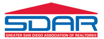

Let SDAR Help you get your real estate license.
We partner with a number of providers to help you get your independent license. See our partners below that offer both pre-licensing and continued education.
{mooblock=5 Steps to become a REALTOR®}
Sign Up for Your Classes Today!
Upon completing each course, take your online exam. Once you have completed and passed all three exams, you are ready to apply for the state exam
{mooblock=First Tuesday}
It's easy to become a Sales Agent.
Complete the three required courses, study the State Exam Prep Book, apply for and pass the State Exam and receive your license in as little as three months.
See the BRE's Sales Agent Licensing eligibility requirements.
How First Tuesday Licensing Courses Work:
1. Order your courses. All First Tuesday courses are homestudy courses. We deliver the materials in print, online and on CD-ROM (the books for courses marked with a "^" are only available in print). Online access is immediate; mailed items ship the business day after the order is placed and arrive within 5-7 business days.
2. Study your materials. The state-mandated minimum study time is 18 days per course. The maximum study time is one year from the date of your order.
3. (Optional) Take the quizzes. Optional quizzes are provided with all First Tuesday licensing courses. Answers are provided to help you measure your understanding of the material.
4. Pass your course exams. The open-book course exams can be taken online or through the mail. Each course exam is 100 multiple choice questions over 2 hours and 30 minutes. The passing score for each course exam is 60%. You may take your course exams as many times as you need to pass within your one-year enrollment period.
5. Obtain your Certificates of Completion. Once you pass your course exams, you may print your own Certificates of Completion online. We will also mail you copies. The Certificate of Completion for each course must accompany your application for the State Exam.
6. (Optional) Study the State Exam Prep Book. Prepare for the State Exam by reviewing a pool of sample questions representing topics commonly covered in the State Exam.
Questions? Call us at 800.794.0494 or see our Licensing Course Instructions.
To use our partner First Tuesday for licensing use the link below and enter enrollment number 5149 to get started today.
{mooblock=Rockwell}
Why do so many students choose Rockwell?
{mooblock=C.A.R. Education}
12 FREE Hours Online CE Courses As A Member Benefit Of C.A.R.
California Requirement Details
BRE Disclaimer:
The courses in this California catalog are approved for continuing education by the California Bureau of Real Estate. However, these course approvals do not constitute an endorsement of the views or opinions which are expressed by the course sponsor, instructor, authors, or lecturers.
The CE Shop is an approved BRE Sponsor in California: #4883
CA Brokers and Salespersons renewing an original license for the first time refer to Post Licensing section below.
CA Brokers and Salespersons in their second or subsequent renewal cycle must complete 45 hours of BRE approved CE courses consisting of:
Seat time: Pursuant to Article 25 – Section 3007.3 (p) a licensee must spend 50 minutes for every hour the course is approved for in the course. The course timing mechanism will keep track of your course time.
Reporting: The state does not have schools report CE hours.
Expiration date of course: Courses expire one year after the order date.
Post Licensing:
Final Exams: Online courses are required to have a timing mechanism. In addition, pursuant to Article 25 – Section 3007.3 (f)(k)(o) licensees will be allotted 1 minute per question on the final exam at the end of the course. A licensee has two (2) attempts on the final exam. If the exam is not passed the second time, the licensee must repurchase and retake the entire course, including the final exam. Passing score is 70%.
Certificates: Immediately upon real estate course completion, The CE Shop will provide students with an electronic copy of the course Certificate of Completion. Certificates will remain in your account for a minimum of five (5) years, should you need additional copies at a later time. Please refer to your renewal application to determine if you need to submit your Certificate(s) of Completion with your renewal. Course completion dates are recorded using Central Standard Time. Please note that the date on your certificates of completion will reflect this.
Please enter your individual license number correctly and fully when prompted in the registration process. Please note: Requires Member ID.
{mooblock=SDAR's Prep Course}

The Greater San Diego Association of REALTORS® also offers our own Licensing Prep Course to help you obtain your real estate license. This one day prep course is quick, easy and convenient, and will qualify you to take the BRE state exam. SDAR has been serving San Diego REALTORS® for over 130 years- learn from the best!
Step 1: The California Real Estate Correspondence Course is quick, easy and convenient, and will qualify you to take the BRE state exam.
Step 2: The best way to prepare for the state license exam is to attend SDAR's One-Day Exam Prep Course, which should be scheduled after you receive your state exam date from the DRE.
Step 3: Pass Your State Exam! *
Included in the Live One-Day Prep Course package:
*99% Pass Rate guarantees passing of the state exam by the second attempt. Prep course must have been taken within three weeks of each state testing date. Both prep courses and exam attempts must have been made within 100 days of the purchase of the course. If you fail the exam twice under the above conditions, return all course materials with failure notices to receive a refund.
To sign up for our one day Prep Course Contact SDAR Member Services (858)715-8040 or Register here
{mooblock=Brokers}
To obtain a real estate broker license, you must first qualify for and pass a written examination. Those who pass the examination are provided a license application which must be submitted to and approved by the BRE.
Applicants for a real estate broker license examination must have successfully completed the following eight statutorily required college-level courses:
Note: If both Real Estate Economics and Accounting are taken, only two courses from the above group are required.
{mooblock=Appraisal}
The courses we offer at our real estate appraisal school are open to the general public. The content of Career WebSchool's appraisal classes fulfills state licensing requirements.
Why earn your appraisal license?
Qualified, knowledgeable appraisers are in high demand. Earning your real estate appraisal license can be a rewarding experience and offer you the opportunity to be at the forefront of a changing industry. Appraisers are able to work independently and enjoy quite a bit of variety in their day-to-day activities which is ideal for those seeking either part-time or full-time work.
Continuing education courses ensure that you are kept abreast of changes in legal and professional standards and stay on the cutting edge of your field. Upon passing your course at our online real estate appraisal school you will have the knowledge and skills needed to offer professional appraisal services to the public.
Why study online?
We recognize that you have two course formats to choose from - online or in a classroom environment. Increased flexibility and convenience are two of the main advantages to our online real estate appraisal school.
Why choose Career WebSchool?
Career WebSchool prides itself on helping you earn your appraisal license quickly and easily. Over the past 20 years we've been able to perfect our mastery and fluency learning methodology which guarantees you'll have the skills you need to succeed in the industry. The courses we offer at our real estate appraisal school:
Our Online Appraisal Courses
Qualifying
After taking our qualifying courses you will be equipped with the knowledge of basic principles and practices, relevant laws and regulations, and professional standards needed to pass your state's real estate appraisal exam. Get Started with our appraisal qualifying courses today!
Exam Prep
Our exam prep courses will ensure you have mastered how to take the exam and are familiar with the types of questions on the exam. Get prepared with our appraisal exam prep courses.
Continuing Education
Appraisal classes are offered to licensed appraisers who are interested in updating their credentials and enhancing their professionalism. Renew your license with our appraisal continuing education courses.